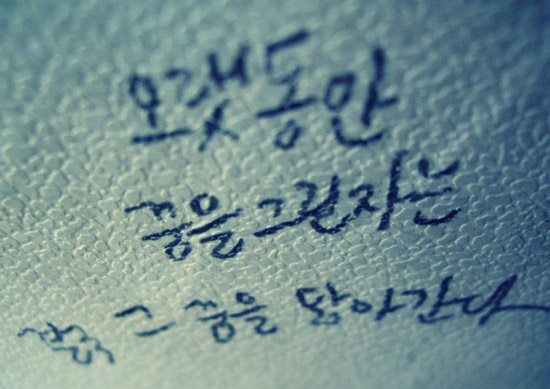

<html>
<head>
<meta http-equiv="content-type" content="text/html; charset=utf8">
<meta name="keywords" content="BuskerLab, Game, Mobile Game, Fun, Indie Game">
<meta name="description" content="About BuskerLab">
<meta name="author" content="wooyong chung @ buskerlab">
<link rel="stylesheet" type="text/css" href="stylesheets/ss.css" />

<title>
BuskerLab
</title>
<script language="JavaScript">
<!--
function isMobile()
{
	var mobileInfo = new Array('Android', 'iPhone', 'iPod', 'BlackBerry', 'Windows CE', 
	'SAMSUNG', 'LG', 'MOT', 'SonyEricsson','Symbian','Windows Phone','webOS','Opera Mini',
	'Opera Mobi','POLARIS','IEMobile');

	var mobile = false;
	// check browser and device information
	for (var info in mobileInfo){
		if (navigator.userAgent.match(mobileInfo[info]))
		{
			mobile = true;
			break;
		}
	}
	// check browser witch
	//if (document.body.clientWidth < 800) {
	//
	//}
	return mobile;
}
//-->
</script>

</head>
<body>
<table width="100%" height="100%" border="0" cellpadding="0" cellspacing="0">
<tr><td class=headertable>
<div class=headerpanel>
<a href="http://buskerlab.com/"></a>
</div>
</td></tr>
<tr><td class=contentstable>
<div class=contentspanel>
<div class=highlight>
BuskerLab은 인터랙티브 미디어 아트의 본질로 돌아가 다양한 꿈과 이야기들을 게임 속에 담아내고자 하는 독립 게임 공작소입니다.
</div>
<br>
<h1>Our Mission</h1>
<div class=highlight>“휴먼스토리를 담은 인터랙티브 미디어 아트를 통해 인류의 정서를 풍요롭게 하겠습니다.”<br>
<br>
Human Stories + Art + Technology = Emotivity<br></div>
<center>

</center>
<h2>Human Stories</h2>
<div class=contents>

우리는 살면서 수많은 선택을 하게 되고, 그러한 선택들이 더해져 오늘의 인생이 됩니다.<br>
하지만 우리가 살면서 선택하지 않은 혹은 선택할 수 없었던 경우의 수를 전부 생각해본다면, 우리의 인생은 수억 가지 다양한 모습으로 그려질 수 있습니다.<br>
그 수억 가지 길 중 단 한 가지 길 밖에 갈 수 없었기에, 우리는 가보지 못한 길들에 대해 상상하고 꿈을 꿉니다.<br>
그 꿈들은 아쉬움, 슬픔, 설레이는 상상 등 다양한 감정으로 가득 채워집니다.<br>
그 꿈들이 모여 각자의 Human Stories가 만들어집니다.
</div>
<br style="clear:both;">
<h2>Art & Technology</h2>
<div class=contents>

그 꿈을 누군가 글로 적어낸 것을 사람들은 소설, 수필 혹은 시라고 부릅니다.<br>
붓을 들고 아름다운 색상으로 그 꿈을 그려낸다면, 그것을 그림이라고 부릅니다.<br>
그 꿈을 소리에 담아 연주하면, 그것을 음악이라고 부릅니다.<br>
움직이는 모습을 통해 그 꿈의 내용을 보다 생동감 있게 보여주면 그것을 영화라고 부릅니다.<br>
컴퓨팅 기술을 통해 그 꿈 속에 가상으로 들어가 간접적으로 그 꿈을 경험할 수 있게 해 주는 매체가 있습니다. <br>
Busker Lab은 이것이 게임이라고 믿습니다.
</div>
<br style="clear:both;">
<h2>Emotivity</h2>
<div class=contents>

Busker Lab은 Art와 Technology를 통하여 다양한 Human Stories를 노래하겠습니다.<br>
감동을 통한 정서적 풍요로움을 이끌어낼 수 있도록 노력하겠습니다.<br>
사람들은 스스로의 선택들이 더해져 만들어진 오늘의 현실을 살아가며 종종 지치고 힘들어 합니다. <br>
그럴 때 잠시나마 Busker Lab의 이야기를 듣고 위로 받으며 웃을 수 있는 모습을 그려봅니다.
</div>
<br style="clear:both;">
<h1>Our Vision</h1>
<h2>Fun & Human Stories 공작소</h2>
<div class=contents>
단순한 재미의 영역에만 집중하는 기성 게임의 틀을 벗어나겠습니다. <br>
인터랙티브 미디어 아트의 본질로 돌아가 다양한 꿈을 노래하는 폭넓은 실험적 도전을 통하여 컨텐츠의 폭을 넓혀나가는 Busker Lab이 되겠습니다.
</diV>
<h2>다양성의 힘을 믿는 시장 개척자</h2>
<div class=contents>
세상에는 수많은 사람들이 살아가며 다양한 꿈과 이야기를 만들어 가고 있습니다.<br>
Busker Lab은 이 다양성에 기반한 가능성을 믿고, 끊임없이 새로운 가치를 발굴하며 시장을 개척하겠습니다.<br>
넓은 시야를 가지고 다양한 즐거움과 이야기에 귀 기울이고, 우리가 노래하는 이야기들을 최대한 많은 사람들에게 전달하는 BuskerLab이 되겠습니다.
</div>
<br>
<!--
<h1>Busker Lab?</h1>
<div class=contents>
Busker Lab 이라는 이름은 아래의 두가지 의미를 담고 있습니다.
</div>
<h2>Busker</h2>
<div class=contents>
: a person who entertains in a public place for donations<br>
좋은 공연을 먼저 고민하고 그것을 통해 수익을 창출하겠습니다.</diV>
<h2>Lab</h2>
<div class=contents>
: a place providing opportunity for experimentation, observation, or practice in a field of study<br>
실험적 도전에 대하여 두려워하지 않고, 새로운 시도를 이어나가겠습니다.
</div>
<br>
-->
<h1>Contact</h1>
<div class=contents>
contact@buskerlab.com<br>
</div>
<br>
</div>
</td></tr>
<tr><td class=footertable>
<div class=footerpanel>
Copyright &#64; 2014 BuskerLab  |  All Rights Reserved.
</div>
</td></tr>
</table>
</body>
</html>